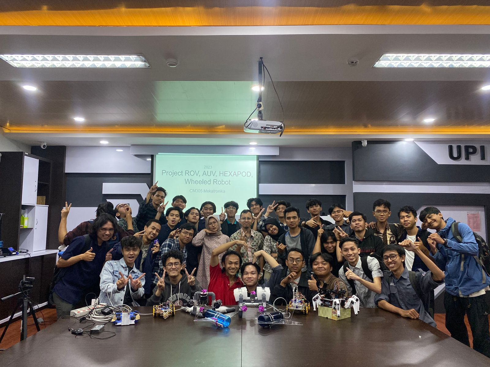

Mengikuti perlombaan iot |
|
setelah menyelesaikan semester 2 saya mendapatkan penawaran dari teman saya yaitu johan untuk mengikuti lomba IoT. pada saat itu saya belum memiliki pengalaman sama sekali, namun saya mendapatkan bimbingan dari salah satu dosen yaitu bapak wirmanto. Setelah panjang proses pembuatan alat lalu kita membuat video presentasi alat, kemudian di pagi harinya kami melakukan persentasi kembali dihadapan juri. setelah beberapa waktu kami pun mendapatkan pengumuman dan mendapatkan juara 3. |
|
|
|  |